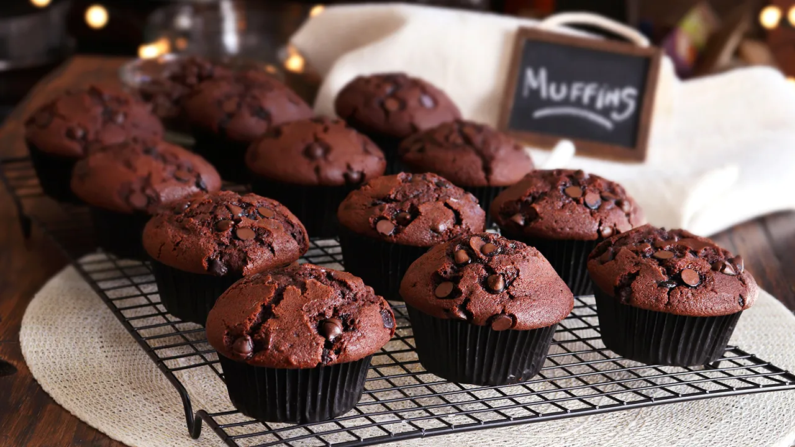

Receta 1: Flan casero

Pasos:
-
Paso 1: Se prepara un caramelo calentando azúcar en una olla hasta que se derrita y adquiera un color dorado, y luego se distribuye en la base de una flanera.
-
Paso 2: En un recipiente, se mezclan los huevos con el azúcar y la esencia de vainilla hasta obtener una preparación uniforme.
-
Paso 3: Se incorpora la leche a la mezcla anterior y se revuelve hasta lograr una consistencia homogénea.
-
Paso 4: Se vierte la preparación en el molde con caramelo y se cocina a baño maría en horno medio durante aproximadamente 40 a 50 minutos.
Receta 2: Muffins de chocolate

Pasos:
-
Paso 1: En un bowl, se combinan los ingredientes secos: harina, cacao en polvo, azúcar y polvo de hornear.
-
Paso 2: En otro recipiente, se mezclan el huevo, la leche y el aceite hasta integrar completamente los ingredientes.
-
Paso 3: Se incorporan los ingredientes líquidos a los secos, mezclando hasta obtener una preparación homogénea sin grumos.
-
Paso 4: Se distribuye la mezcla en moldes para muffins y se hornea a temperatura media durante 20 a 25 minutos.
Receta 3: Panqueques con dulce de leche

Pasos:
- Paso 1: En un recipiente, se baten el huevo, la leche y el azúcar hasta integrar completamente los ingredientes.
-
Paso 2: Se incorpora la harina de a poco, mezclando hasta obtener una preparación líquida y sin grumos.
-
Paso 3: Se calienta una sartén ligeramente engrasada con manteca o aceite a fuego medio.
-
Paso 4: Se vierte una porción de la mezcla en la sartén, se cocina de ambos lados hasta dorar y se rellena con dulce de leche.
Receta 4: Cookies con chips de chocolate

Pasos:
-
Paso 1: En un recipiente, se bate la manteca con el azúcar hasta obtener una mezcla cremosa.
-
Paso 2:Se incorpora el huevo y la esencia de vainilla, mezclando hasta integrar completamente.
-
Paso 3: Se agregan la harina y el polvo de hornear, formando una masa uniforme.
-
Paso 4: Se incorporan los chips de chocolate, se forman las cookies y se hornean a temperatura media durante 10 a 15 minutos.